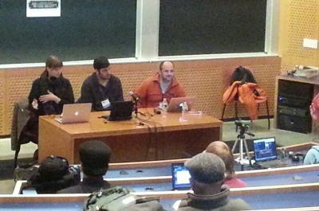

Las Cooperativas de tecnología argentinas contaron su experiencia de trabajo en el MIT
index | OSiUX | blog | docs | charlas

"Participar de LibrePlanet 1 fue muy importante para las cooperativas argentinas. La invitación fue para contar nuestro caso y de esa manera, colaborar en el crecimiento de las cooperativas de EEUU y del resto del mundo", aseguró Leandro Monk. El Libre Planet se desarrolló, como desde hace varios años, en el Massachusetts Institute of Technology (MIT) 2, uno de los polos de la innovación tecnológica norteamericana ligada a la industria del software y la informática. El tema central de este año fue "Software Libre, Sociedades Libres", y se habló de la capacidad del software libre para proteger a periodistas, activistas y usuarios de la vigilancia de gobiernos y corporaciones. "La experiencia es sumamente gratificante y forma parte de nuestro compromiso cooperativo de fortalecer al movimiento", agregó.
"Nos invitan porque Argentina es el país con más cooperativas de tecnología en el mundo, además de ser los únicos con una federación, es decir, con un nivel avanzado de institucionalización. En ese sentido, compartir con el movimiento cooperativo de EEUU fue muy enriquecedor". En su charla, Leandro se refirió a las ventajas de organizar los emprendimientos tecnológicos como cooperativas, ya que "el capital necesario para el desarrollo del trabajo es fundamentalmente el conocimiento de las personas que lo integran, sin necesidad de grandes montos de inversión. Esto abre la posibilidad de crear empresas cooperativas con muy bajo costo de inversión inicial en activos fijos, a diferencia de otro tipo de cooperativas que precisan de la compra de máquinas, herramientas y materias primas para empezar a trabajar y desarrollar el producto", agregó. También destacó que "los trabajadores especializados en información y tecnología están acostumbrados a desarrollar su trabajo coordinando sus experiencias en red y compartiendo información y conocimiento, especialmente los que desarrollan tecnologías libres". Ejemplo de esto es el "kernel" (núcleo) del sistema operativo libre Linux, "que cuenta con más de quince millones de líneas de código aportadas por miles de programadores alrededor del mundo".
También se refirió a la primera cooperativa argentina del rubro, Tecso 3, que se inicia en 2002 a partir de un grupo de profesionales con trayectoria en importantes empresas que eligieron la organización cooperativa por estar sustentada en la horizontalidad y la participación, "para ellos, estas cualidades lo hacían un buen modo de transitar la crisis económica y social que vivía el país", afirma Leandro. En ese sentido, aseguró que el país ha vivido en los últimos años "un proceso de creación de cooperativas de trabajo tecnológicas que nos llevó a que tengamos hoy más de ellas que todo el resto del mundo sumado". Actualmente funcionan en el país 23 cooperativas repartidas en todo el país, que dan empleo a 300 especialistas y trabajan mayoritariamente con software libre.
Por último, el presidente de Facttic 4 hizo especial hincapié en cómo "la tecnología es una expresión de la política; si vos querés hacer una tecnología que centralice y acumule, hacés Facebook. Nosotros pensamos en tecnologías distintas, que no concentren, que distribuyan, que incluyan", resumió.